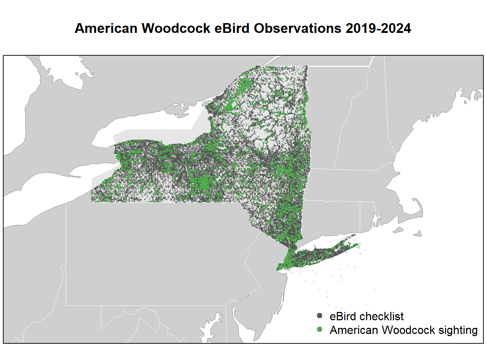

library(auk)
library(dplyr)
library(ggplot2)
library(gridExtra)
library(lubridate)
library(readr)
library(sf)The raw data from eBird has 2,276,777 observations for the sampling data (meaning all checklists in New York state from January 2019 to January 2024) and 13,748 woodcock observations in New York state in the same time frame.
# observation data
amwo <- "data/ebd_US-NY_amewoo_201901_202401_smp_relSep-2024.txt"
# checklist data
amwo_samp <- "data/ebd_US-NY_amewoo_201901_202401_smp_relSep-2024_sampling.txt"
# downloaded from https://drive.google.com/drive/u/0/folders/1Ui7op-20dxaKV9Bpibyv5otlqgyZTty-
# add the .txt file into your local ./data folder
checklists <- read_sampling(amwo_samp) # the 600MB file will take a while to load
observations <- read_ebd(amwo)checklist_id
Identification tag for each checklist, composed of unique alphanumeric
codes.
global_unique_identifier
A unique alphanumeric code assigned to each record that persists through
database revisions, updates, and edits.
last_edited_date
The date and time of the most recent edit to the observation, useful for
determining whether updates are necessary for locally stored
data.
taxonomic_order
A numeric value used to arrange species in the latest taxonomic sequence
as per the eBird/Clements taxonomy.
category
The taxonomic category (e.g., species, hybrid, slash) assigned to the
taxon.
taxon_concept_id
A unique identifier for the taxonomic concept in external databases like
Avibase.
common_name
The primary English common name of the taxon.
scientific_name
The scientific name of the taxon.
exotic_code
Indicates whether the taxon is exotic or introduced in the
region.
observation_count
The count of individuals observed. An ‘X’ indicates presence if no count
was made.
breeding_code
The highest level of breeding information reported for the species on a
given checklist.
breeding_category
Breeding status categories (e.g., C1 – Observed, C4 – Confirmed) based
on atlas codes.
behavior_code
Behavioral observations recorded for the species (e.g., displaying
courtship, carrying food).
age_sex
Counts for combinations of age (adult, immature, juvenile) and sex
(male, female, unknown).
country
The country where the observation was made.
country_code
Abbreviation for the country name (ISO 3166-2).
state
The state or province where the observation was made.
state_code
Abbreviation for the state or province name (ISO 3166-2).
county
The county where the observation was made.
county_code
Alphanumeric code representing the county in
COUNTRY-STATE-COUNTY format.
iba_code
Code for Important Bird Areas (IBAs) if the observation falls within
such an area.
bcr_code
Code for Bird Conservation Regions (BCRs).
usfws_code
Code for United States Fish and Wildlife Service land holdings.
atlas_block
A code indicating the block used for specific atlas projects, based on
7.5-minute USGS topographic maps.
locality
The location name for the observation (e.g., eBird Hotspots).
locality_id
A unique alphanumeric code for the location.
locality_type
The type of location (e.g., Personal, Hotspot, County).
latitude
Latitude of the observation in decimal degrees.
longitude
Longitude of the observation in decimal degrees.
observation_date
The date of the observation in YYYY-MM-DD format.
time_observations_started
The time when observations began (24-hour clock format).
observer_id
A unique identifier for the observer or group of observers.
sampling_event_identifier
A unique code for the sampling event (eBird checklist).
protocol_type
The type of survey conducted (e.g., Traveling Count, Stationary
Count).
protocol_code
Short alphanumeric code identifying the protocol.
project_code
Portal or project through which the data was collected (e.g., eBird
Chile, Wisconsin Breeding Bird Atlas).
duration_minutes
Duration of the sampling event in minutes.
effort_distance_km
Distance traveled during the sampling event (kilometers).
effort_area_ha
Area covered during the sampling event (hectares).
number_observers
Total number of observers participating in the event.
all_species_reported
Indicates if all species detected were reported (1 = yes, 0 =
no).
group_identifier
Unique ID for shared checklists among multiple observers.
has_media
Indicates whether the observation includes media (photos, audio, or
video).
approved
Status of the record within the eBird data quality process (Approved/Not
Approved).
reviewed
Indicates whether the record was reviewed by a regional editor (1 = yes,
0 = no).
reason
Reason for a record being “Not Approved” (e.g.,
Species—Introduced/Exotic).
trip_comments
Comments about the sampling event (checklist) provided by the
observer.
species_comments
Comments about the specific species observation provided by the
observer.
Non-complete checklists were excluded for better data quality.
checklists <- checklists |>
filter(all_species_reported)
observations <- observations |>
filter(all_species_reported)eBird has the ability to transform the data to produce detection/non-detection data (also called presence/absence data). With presence-only data, but no information of the amount of search effort expended to produce that data, it is difficult to estimate or predict how common a species is.
“Zero-filling” the data process: for complete checklists, information about non-detections can be inferred from the SED: if there is a record in the SED but no record for a species in the EBD, then a count of zero individuals of that species can be inferred.
observations <- observations %>%
filter(checklist_id %in% checklists$checklist_id)
zf <- auk_zerofill(observations, checklists, collapse = TRUE)Before continuing, we’ll transform some of the variables to a more useful form for modelling. We convert time to a decimal value between 0 and 24, force the distance traveled to 0 for stationary checklists, and create a new variable for speed.
# function to convert time observation to hours since midnight
time_to_decimal <- function(x) {
x <- hms(x, quiet = TRUE)
hour(x) + minute(x) / 60 + second(x) / 3600
}
# clean up variables
zf <- zf |>
mutate(
# convert count to integer and X to NA
# ignore the warning "NAs introduced by coercion"
observation_count = as.integer(observation_count),
# effort_distance_km to 0 for stationary counts
effort_distance_km = if_else(protocol_type == "Stationary",
0, effort_distance_km),
# convert duration to hours
effort_hours = duration_minutes / 60,
# speed km/h
effort_speed_kmph = effort_distance_km / effort_hours,
# convert time to decimal hours since midnight
hours_of_day = time_to_decimal(time_observations_started),
# split date into year and day of year
year = year(observation_date),
day_of_year = yday(observation_date)
)## Warning: There was 1 warning in `mutate()`.
## ℹ In argument: `observation_count = as.integer(observation_count)`.
## Caused by warning:
## ! NAs introduced by coercionAccounting for variation in effort: restricting checklists to traveling or stationary counts less than 6 hours in duration and 10 km in length, at speeds below 100km/h, and with 10 or fewer observers.
# additional filtering
zf_filtered <- zf |>
filter(protocol_type %in% c("Stationary", "Traveling"),
effort_hours <= 6,
effort_distance_km <= 10,
effort_speed_kmph <= 100,
number_observers <= 10)Here, we will project all the observational and sampling data onto a New York state map using GIS data.
# load gis data
ne_land <- read_sf("data/gis-data.gpkg", "ne_land") |>
st_geometry()
ne_country_lines <- read_sf("data/gis-data.gpkg", "ne_country_lines") |>
st_geometry()
ne_state_lines <- read_sf("data/gis-data.gpkg", "ne_state_lines") |>
st_geometry()
study_region <- read_sf("data/gis-data.gpkg", "ne_states") |>
filter(state_code == "US-NY") |>
st_geometry()
# prepare ebird data for mapping
checklists <- zf_filtered |>
select(checklist_id, observer_id,
observation_count, species_observed,
state_code, locality_id, latitude, longitude,
protocol_type, all_species_reported,
observation_date, year, day_of_year,
hours_of_day,
effort_hours, effort_distance_km, effort_speed_kmph,
number_observers)
checklists_sf <- checklists |>
# convert to spatial points
st_as_sf(coords = c("longitude", "latitude"), crs = 4326) |>
select(species_observed)
# map
par(mar = c(0.25, 0.25, 4, 0.25))
# set up plot area
plot(st_geometry(checklists_sf),
main = "American Woodcock eBird Observations 2019-2024",
col = NA, border = NA)
# contextual gis data
plot(ne_land, col = "#cfcfcf", border = "#888888", lwd = 0.5, add = TRUE)
plot(study_region, col = "#e6e6e6", border = NA, add = TRUE)
plot(ne_state_lines, col = "#ffffff", lwd = 0.75, add = TRUE)
plot(ne_country_lines, col = "#ffffff", lwd = 1.5, add = TRUE)
# ebird observations
# not observed
plot(filter(checklists_sf, !species_observed),
pch = 19, cex = 0.1, col = alpha("#555555", 0.25),
add = TRUE)
# observed
plot(filter(checklists_sf, species_observed),
pch = 19, cex = 0.3, col = alpha("#4daf4a", 1),
add = TRUE)
# legend
legend("bottomright", bty = "n",
col = c("#555555", "#4daf4a"),
legend = c("eBird checklist", "American Woodcock sighting"),
pch = 19)
box()